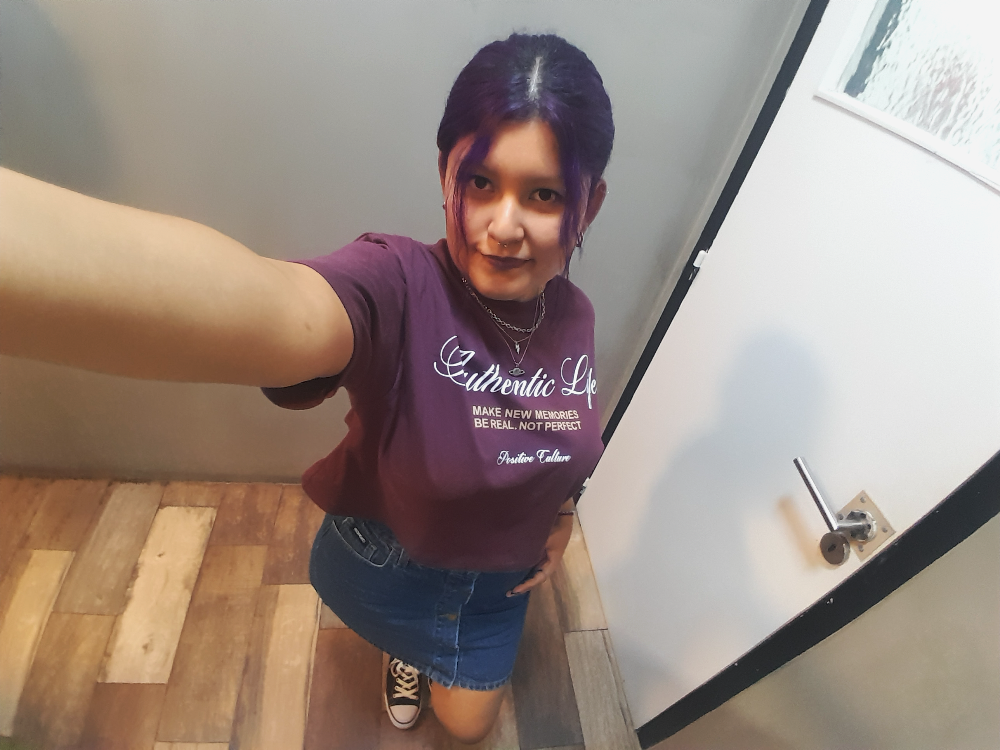
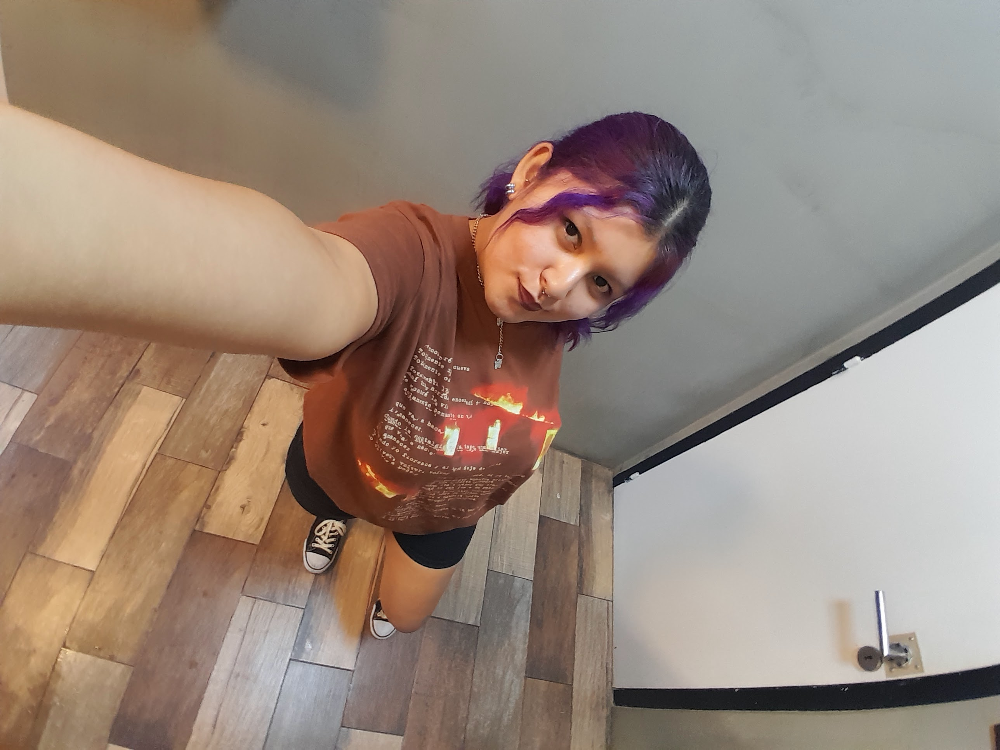
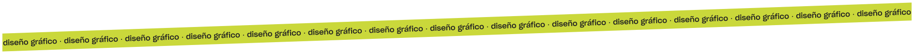
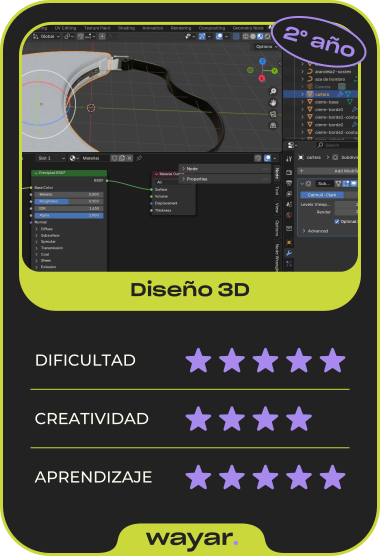
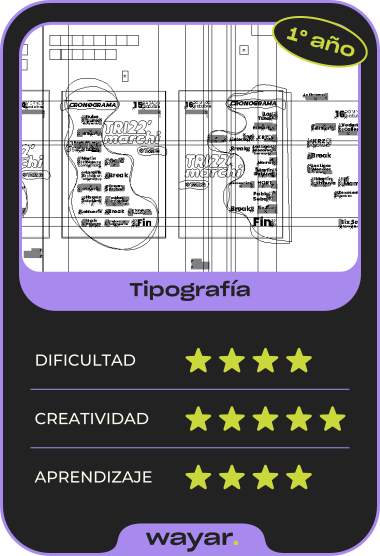
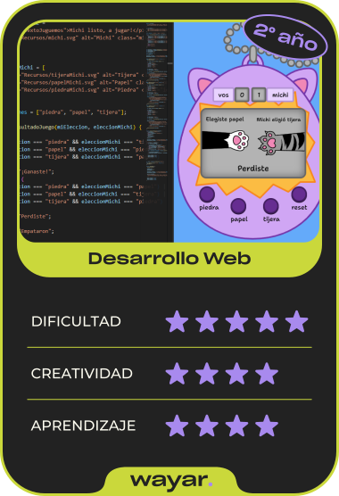
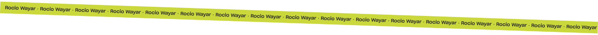

Diseñadora gráfica en formación
Tengo 26 años y vivo en Buenos Aires, Argentina. Actualmente estoy cursando el tercer año de la carrera de Diseño Gráfico, donde estoy desarrollando mis habilidades proyectuales y construyendo una mirada propia dentro del mundo del diseño.
Mi interés principal se centra en el diseño de packaging y en la construcción de universos visuales, explorando la capacidad del diseño para comunicar ideas, transmitir valores y generar vínculos.


A lo largo de mi cursada, trabajé en distintos proyectos académicos que me permitieron explorar diversas áreas del diseño. En diseño tridimensional, experimenté con la construcción de formas; en tipografía, profundicé en el uso expresivo de la letra; y en recursos expresivos, desarrollé piezas orientadas a la comunicación conceptual. Asimismo, en prácticas profesionalizantes, comencé a vincular estos conocimientos con situaciones más cercanas al ámbito laboral.
Estas experiencias me ayudaron a desarrollar un enfoque centrado en la coherencia visual, el detalle y la construcción de identidad. Me interesa seguir profundizando en el diseño y enfrentando nuevos desafíos que impulsen mi crecimiento académico y profesional.
Te invito a ver mas de mis trabajos en la sección "Proyectos".

Experiencia académica
La carrera me permitió explorar distintas ramas del diseño y descubrir áreas que hoy forman parte de mi enfoque. Estas son algunas de las materias y experiencias que más me marcaron en estos ultimos 2 años de formación.





Habilidades técnicas
El trabajo en distintos proyectos me permitió desarrollar herramientas y habilidades que hoy forman mi perfil profesional. Me interesa combinar diseño y desarrollo, explorando nuevas técnicas y ampliando constantemente mis conocimientos.